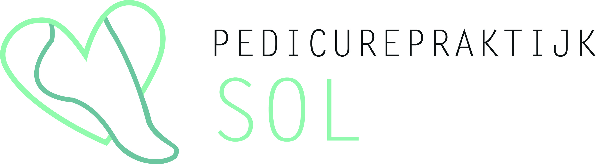

PROGRAMMA'S
Indesign, Photoshop, Illustrator, Adobe xd
De beelden zijn gepubliceerd onder toestemming van Joke Sol.
Pedicure Praktijk Sol
examen project voor Joke Sol via het Mediacollege Amsterdam
Dit examen werd uitgevoerd in een groep. Deze bestond uit drie interactieve media vormgevers en twee media developers. De opdrachtgever was Joke Sol die een huisstijl wilde voor haar pedicure praktijk.
OVER HET BEDRIJF
Joke Sol is een gediplomeerd medisch pedicure. Zij verzorgt voeten die aandacht vragen. Hierbij rich ze zich op voeten die al een tijdje meegaan: voeten van middelbare of oudere leeftijd. Ook voeten die pijnlijk kunnen zijn; juist minder gevoelig; die het zwaar te verduren hebben of zelfs een risico voor de gezondheid vormen.
DOEL
Als groep zetten we voor Pedicure Praktijk Sol een huisstijl op bestaande uit in ieder geval een website en logo. De meeste informatie is aangeleverd, wij vullen het aan in overleg met de opdrachtgever. Als groep moeten wij er voor zorgen dat het aan alle wensen voldoet en dat de website bij Joke Sol past.
KLANT
Joke Sol
MIJN ROL
Vormgever, Bijhouden van documentatie, Contactpersoon
DE OPDRACHT
Joke sol gaat starten met een kleine pedicure-praktijk aan huis in Alkmaar. Hiervoor moet een website gemaakt worden die informatie geeft over wie zij is, wat zij aanbiedt en wat het resultaat van de behandelingen voor de klant is.
De eisen:
• Medisch & wellness aspect moet zichtbaar zijn
• Overzichtelijke & simpele website
• Website (responsive)
• Logo
• Visitekaartje
• Afsprakenkaartje
In overleg met Joke Sol leveren wij als eindproduct een overzichtelijke website die bij haar en haar bedrijf past. Hiernaast krijgt Joke Sol ook nog een visitekaartje en een afsprakenkaartje in de nieuwe huisstijl.
Note: Alles wat is getoond heb ik aan gewerkt als mijn rol in het team.
MOODBOARD
Voordat er werd begonnen aan het visuele ontwerp was het belangrijk dat er een moodboard werd gemaakt. Op deze manier werd er gekeken of we het juiste idee hadden voor de look & feel voor de huisstijl.
STYLEBOARD
Door een styleboard te maken kon Joke Sol zien welke kant wij op wilden voor de huisstijl van haar bedrijf. Er is gebruik gemaakt van lichte kleuren met als twee basiskleuren; donkergroen en lichtgroen.

LOGO
In het logo wilde we zachtheid uitstralen en het wellness gevoel naar voren laten komen. Er is dus gekozen voor een subtiel hart om de omlijning van een voet. De naam van de pedicure praktijk is duidelijk weergeven naast het icoon.
WIREFRAMES
Voor het maken van het visuele ontwerp heb ik wireframes gemaakt die aantonen waar de plaatsing komt van het menu, tekst, afbeeldingen etc. Dit heb ik gedaan voor desktop formaat en mobiel.

UX/UI Design
Aan de hand van de wireframes kon ik verder gaan op het visuele ontwerp. De wireframes zijn de basisstructuur van de website. Hierdoor kan vervolgens het visuele ontwerp makkelijker worden gemaakt.
WEBSITE
Na akkoord van Joke Sol hebben we er als team voor gezorgd dat de website aan alles eisen voldeed. De website is op alle devices goed bruikbaar. Joke Sol kan haar website zelf onderhoud door een gebouwd CMS (content management system) van de developers.
VISITEKAARTJE & AFSPRAKENKAARTJE
Nadat de website online stond en iedereen tevreden was heb ik een visitekaartje en afsprakenkaartje gemaakt in de huisstijl van Pedicure Praktijk Sol.
CONCLUSIE
De samenwerking tussen ons examenteam en de opdrachtgever liep goed. Elke week hadden we een overleg op locatie en er werd dagelijks nauw contact gehouden. Doordat ik de contactpersoon was en de documentatie bijhield bleef alles overzichtelijk voor het hele team.
Joke Sol was zeer tevreden over het resultaat. Alles voldeed aan haar verwachtingen. Pedicure Praktijk Sol heeft nu een gebruiksvriendelijke website met informatie en visitekaartjes om uit te delen.
Na de afronding van het examen heeft Joke Sol nog contact met mij opgezocht om een folder en flyer voor haar te maken.


Copyright © 2020 Ysabella Vargas Reyes